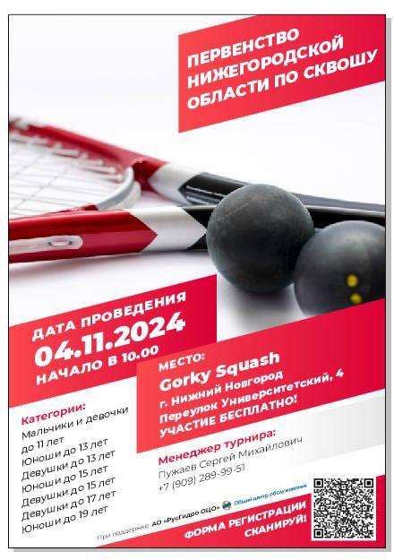
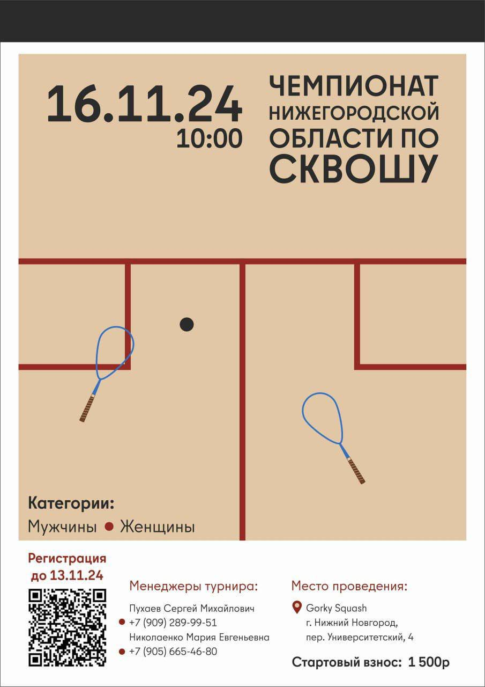

Анонсы
 
На 3 этапе юниорской серии Нижегородским спортсменам удалось завоевать 8
медалей.
В категориях:
"Девочки до 11 лет" золото завоевала Cмирнова Софья;
"Мальчики до 11 лет" бронзу завоевал Савелий Музычук;
"Девушки до 13 лет" второе место заняла Дарья Егорова;
"Юноши до 15 лет" золотую медать привез Егор Сысоев;
"Юноши до 17 лет" второе место занял Иван Соловьев;
"Девушки до 17 лет" все три призовых места заняли Нижегородские спортсменки:
золото забрала Спирина Мария, cеребро - Спирина Екатерина,
бронзу - Наталья Чижова.


На 3 этапе юниорской серии Нижегородским спортсменам удалось завоевать 8
медалей.
В категориях:
1 место до 15 лет Егорова Дарья
2 место до 15 лет Сяба Вера
1 место до 17 лет Елькина Анастасия
2 место до 19 лет Городничева Валентина
3 место до 13 лет Музычук Савелей
2 место до 17 лет Сысоев Егор
4 ноября при поддержке Нижегородской федерации сквоша и АО «РусГидро ОЦО» состоялось Первенство Нижегородской области по сквошу. В соревнованиях приняли участие 45 спросртсменов разных возрастных категорий. Матчи получились эмоциональные, не обошлось конечно без слез.
Для самых маленьких это были первые соревнования в их карьере). Поздравляю победителей и призеров

В категориях:
Девочки до 11 лет:
1 место Изергина Ева
2 место Конюченко Анна
3 место Маслова Алеся
Мальчики до 11 лет:
1 место Фомин Тимофей
2 место Старкин Александр
3 место Чвалаев Марк
Девочки до 13 лет:
1 место Репина Мария
2 место Чистякова Анастасия
3 место Булавина Мария
Мальчики до 13 лет:
1 место Сомов Михаил
2 место Кирсанов Федор
3 место Андреев Лев
Девочки до 15 лет:
1 место Егорова Дарья
2 место Смирнова Софья
3 место Халманова Ксения
Мальчики до 15 лет:
1 место Музычук Савелий
2 место Алексеев Арсений
3 место Морозов Матвей
Девочки до 17 лет:
1 место Спирина Екатерина
2 место Спирина Мария
3 место Елькина Анастасия
Мальчики до 19 лет:
1 место Спирин Роман
2 место Соловьёв Иван
3 место Сысоев Егор